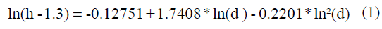
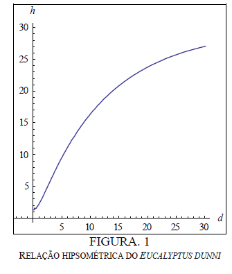
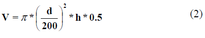

|
ETAPA I: CLASSIFICAÇÃO DAS ÁRVORES Nesta etapa foram definidas as classes de preço em que as árvores da floresta de Eucalyptos serão classificadas, relacionando a quantidade de árvores em cada classe. Para a classificação das árvores utilizou-se a relação hipsométrica, a qual descreve a relação entre o diâmetro médio e a altura da árvore. Através de resultados de observações e experimentos, Zanon [7], mostrou que (1) é a equação que melhor descreve relação entre diâmetro e altura do Eucalyptus dunni.  onde ln é o logaritmo natural, h é a altura em metros, e d é o diâmetro médio em centímetros. Por exemplo, em uma árvore com altura de 25 metros de Eucalyptus dunni, aplicando (1) obtém-se que o diâmetro médio é de 22.9105 cm. A relação hipsométrica é expressa na Figura 1.  Com a obtenção do diâmetro determinou-se a quantidade de volume de madeira através da equação proposta por [8].  onde h é a altura em metros, e d é o diâmetro médio em centímetros e V é o volume de madeira em m³. Utilizando o exemplo anterior, o volume médio de madeira de uma árvore de Eucalyptus dunni de 25 metros de altura é de 0.515288 m³ de madeira de acordo com (2). Para construir as classes considerou-se que atualmente o metro cúbico da árvore de eucalipto está sendo vendido entre 30 a 50 reais, dependendo da região e destinação da madeira [8].
|